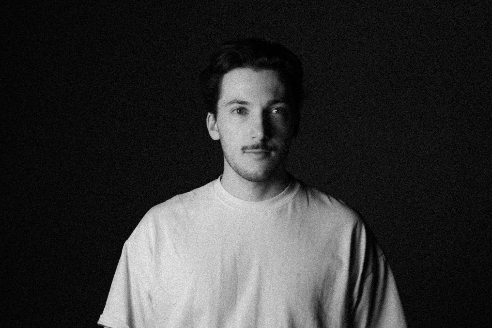

René
Thoma
Photographer and media producer based in Gundelfingen, currently completing a Master of Arts in Digital Communication Environments at FHNW/HGK Basel. BA in Design with a focus on CGI, animation and interaction design from TH Nürnberg, 2024, grade 1.3.
Professional practice in photography and video since 2016, with a background in architectural and advertising photography. Strong visual sensibility grounded in architecture and the built environment, with working knowledge of the full production pipeline from concept through post-production.
Experience
2025–Photography Tutor, FHNW Basel
2024–Freelance Photographer & Assistant, Markus Edgar Ruf, Binzen
2023–24Working Student Corporate Design & Marketing, Baloise Insurance AG, Basel
2022–23Intern Visual Design, F. Hoffmann-La Roche Ltd, Kaiseraugst
2016–Freelance Photographer, Self-employed
2016–24Freelance Photographer & Assistant, Studio Rolf Frei / Galerie Underground, Weil am Rhein
Education
2024–MA Digital Communication Environments, FHNW/HGK Basel
2020–24BA Design — CGI, Animation, Interaction Design, TH Nürnberg — 1.3
2018–19Fachhochschulreife Gestaltung, Gertrud Luckner Gewerbeschule, Freiburg — 1.6
2018Journeyman's Certificate Photography, Gertrud Luckner Gewerbeschule
2014–16Vocational Certificate Photography & Media Technology, Gertrud Luckner Gewerbeschule — 1.8
Tools
PhotoPhotoshop · Capture One · Lightroom · analogue processes
MotionDaVinci Resolve · Premiere Pro · After Effects · Blender · Blackmagic
DesignInDesign · Illustrator · TouchDesigner · Metashape
OtherHTML · CSS · Linux · Raspberry Pi
Languages
German — native · English — B2/C1 (TOEIC)
Contact
Email[email protected]
Phone+49 174 734 94 07
LinkedInrenethoma
BasedGundelfingen, Deutschland